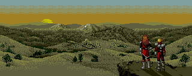
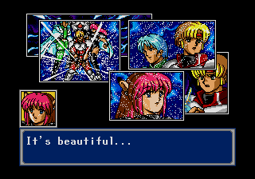
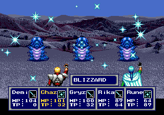
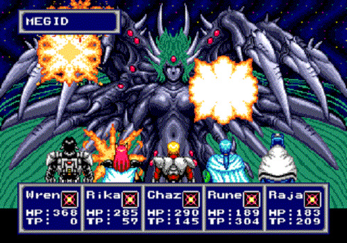

Olá, para quem ainda está perdido no assunto lhes apresento o famoso RPG da Sega Phantasy Sega IV.
Lançado em 1993, o quarto game da série conta com uma trama envolvente com conexão com os games anteriores.
Acompanhe abaixo 5 motivos para jogar o tão falado PSIV!
História bem elaborada
A história se passa 2000 anos após o primeiro game da série e sempre trás a tona personagens e vilões originais, o que torna a trama mais conexa e interessante;

Gráficos espetaculares
O jogo tem uma riqueza nos gráficos e levou tudo à beira da perfeição, se tratando de um jogo criado para um console 16 bits! Cenários, personagens, monstros, itens, tudo foi bem desenhado em bem feito. Em cenas de diálogos ainda podemos observar quadros que monstram os personagens em destaque na fala, o que torna o nível de detalhes maior.


Trilha sonora
Com musicas e temas que se encaixaram perfeitamente em cada situação do jogo, a trilha sonora dita muito bem os temas propostos e oferece ao jogador uma ótima experiência com belos efeitos sonoros de batalhas, magias, itens, etc..
Sistema de evolução e batalha
Adotando um sistema de niveis do personagem o balanceamento entre o progresso com a história acontece de forma natural. Os personagens podem aprender e combinar novas técnicas que vão auxiliar no estilo de batalha do jogo (por turno), que também são um ponto forte do game.

Horas de gameplay
Por fim, o jogo garante muito tempo de diversão. Com aproximadamente 10 horas de gameplay é possivel concluir o quarto game da série PS, então, dá pra zerar em pouco tempo ou ir jogando aos poucos e apreciar ao máximo o que essa obra tem a oferecer.
Por fim, vale a pena conhecer o game. Com tantas qualidades, pode se esperar o melhor desta obra feita para o Mega Driver.
Caso queira mais detalhes sobre, acesse o link abaixo para uma enciclopédia completa sobre o jogo, ou simplesmente vá jogá-lo e conhecer pessoalmente.